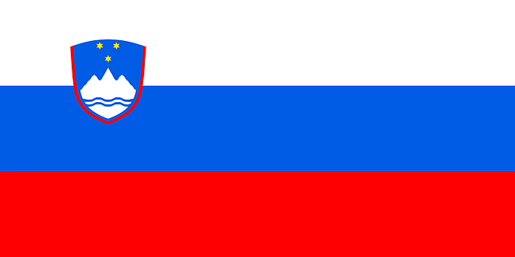

Slovenia (/sloʊˈviːniə, slə-/ (About this sound listen)sloh-VEE-nee-ə; Slovene: Slovenija [slɔˈʋèːnija]),officiallythe Republic of Slovenia (Slovene: About this soundRepublikaSlovenija (help·info), abbr.: RS), is a sovereignstate locatedin southern Central Europe at a crossroads of importantEuropean cultural and trade routes. It is borderedby Italy tothe west, Austria to the north, Hungary to the northeast,Croatia to the southeast, and the Adriatic Sea tothesouthwest.
Slovenia has historically been the crossroads of Slavic,Germanic, and Romance languages and cultures. Althoughthepopulation is not homogeneous, Slovenes comprise themajority.The South Slavic language Slovene is theofficiallanguage throughout the country. Slovenia is a largelysecularized country, but Catholicism and Lutheranismhavesignificantly influenced its culture and identity.The economyof Slovenia is small, open and export-oriented andhas beenstrongly influenced by international conditions.Ithas beenseverely hurt by the Eurozone crisis which startedin 2009.Themain economic field is services, followed by industryandconstruction.
Natural regions:
Slovenia's name means the"Land of the Slavs" in Slovene and other South Slaviclanguages.The etymology of Slav itself remains uncertain.
Ethnic groups: